Chapter 5 Covariate Models
5.1 Race


This section explores exponentially distributed models that include age dynamics.
Age dynamics are particularly important for models of STIs due to the differences in reported diagnoses by age categories. Therefore it is important to represent relationships in these age cats reasonably, as duration and formation influence risk.
Age’s effects on relationship duration are complex
- Relationship age at time of interview usually lower for younger people, but due to a combination of ‘churn’ and not being alive long enough to have had decades-long relationships. - Age difference between ego and alter matters, but affect of age difference is likely to vary across the life course. - The effect age of age difference on relationship duration may be different depending on if the male or female is the older partner. - Which age is most important for relationship persistence? Age at beginning of relationship, or current age? - Whose age to model? Ego age? Partner age? Ego age and age difference?
Dyadic Complications
- Relationship duration is unlikely to be independent of other relationships each partner may be participating in. - Is there a way to represent this in a parametric regression model, and if not, what are the consequences of assuming independence between relationships?
Likely other complications.
5.2 Age
note: categorical models not shown here! finding a way to plot better
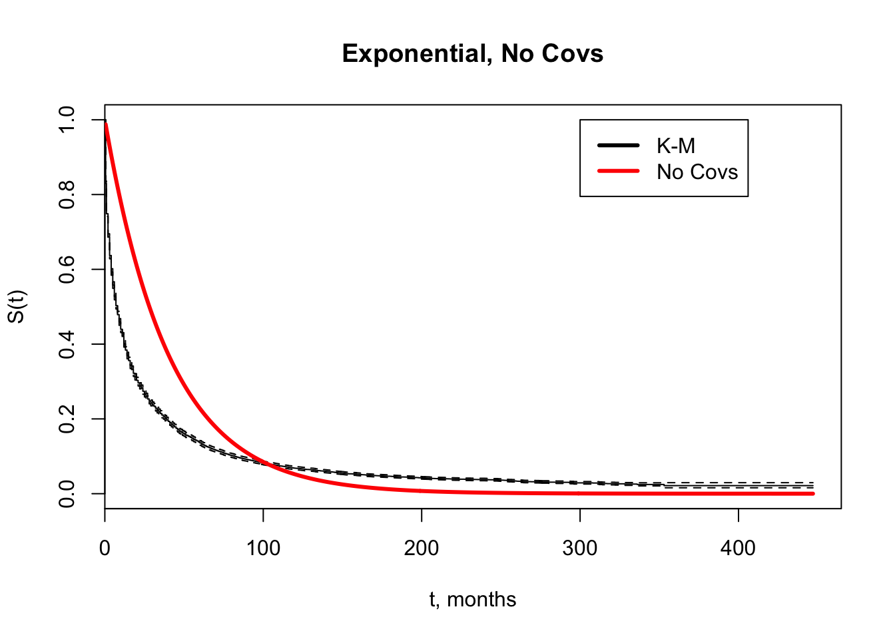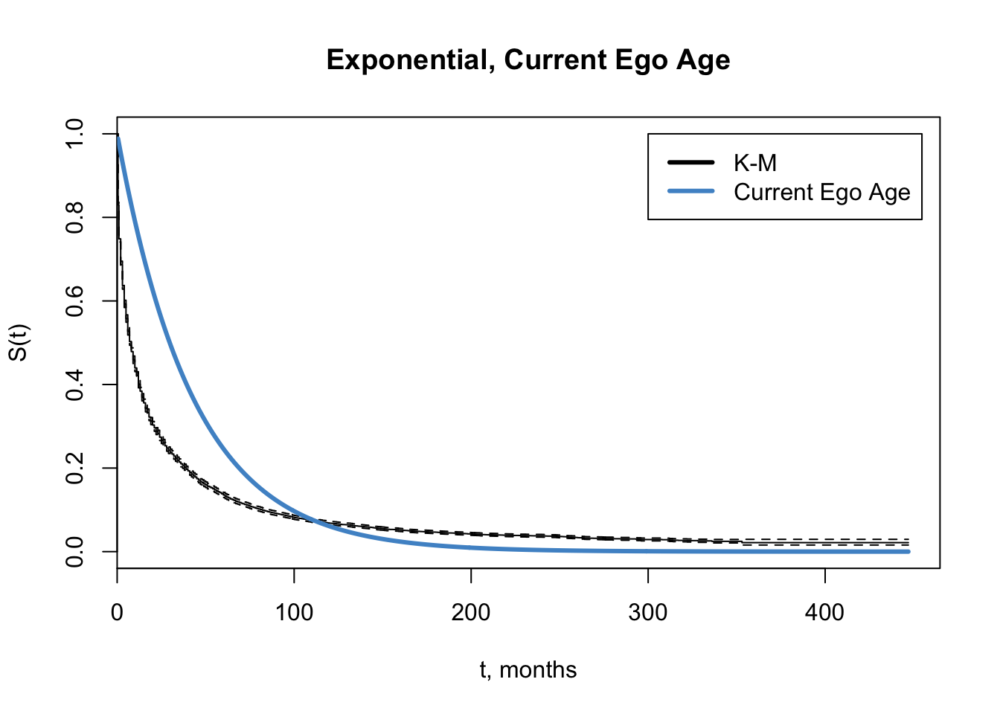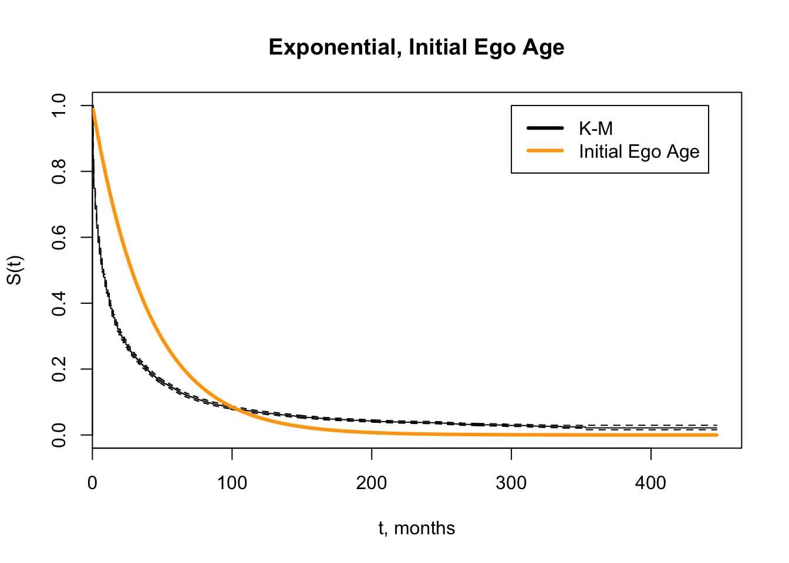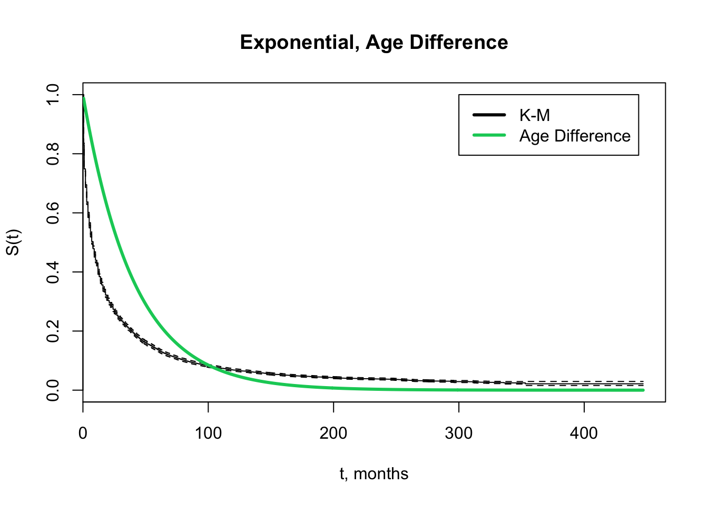
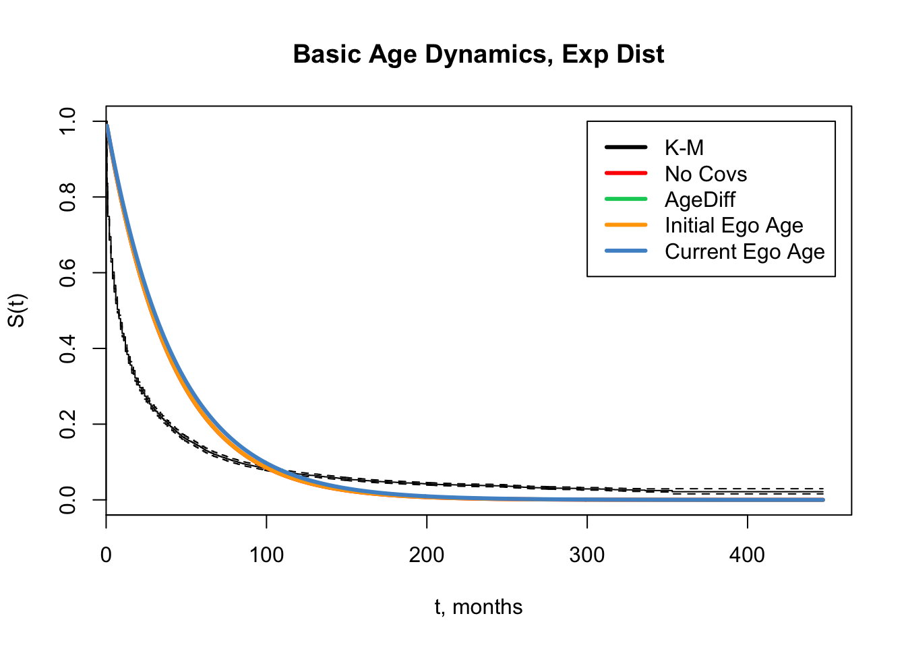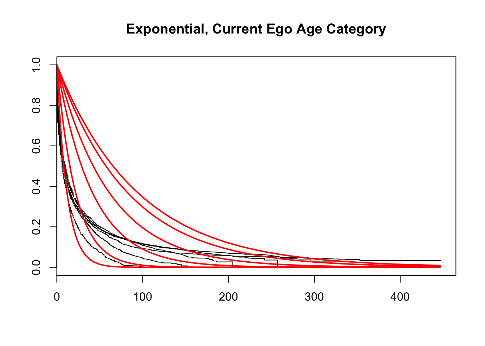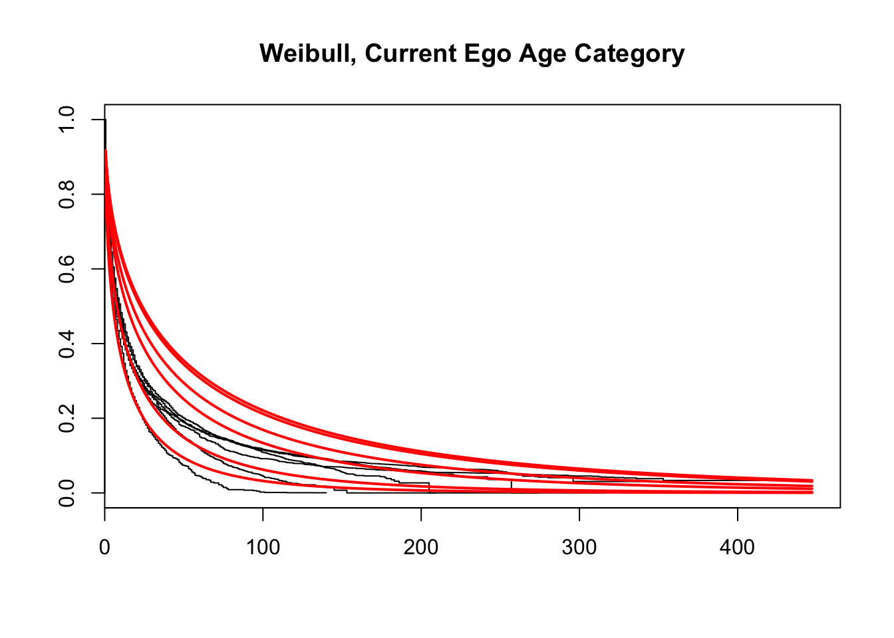
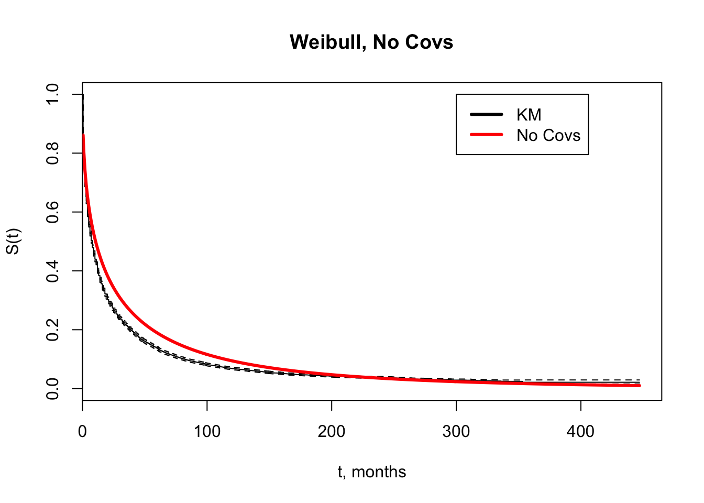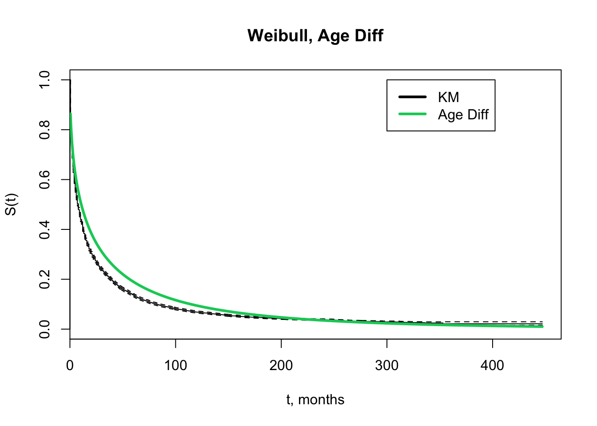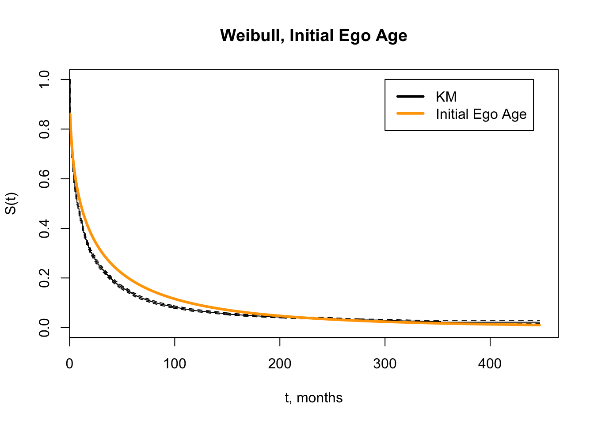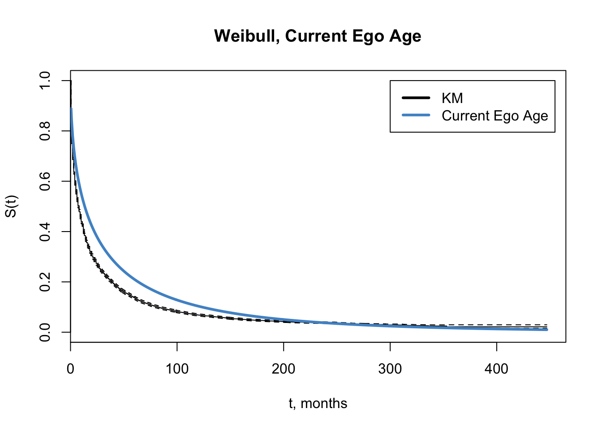
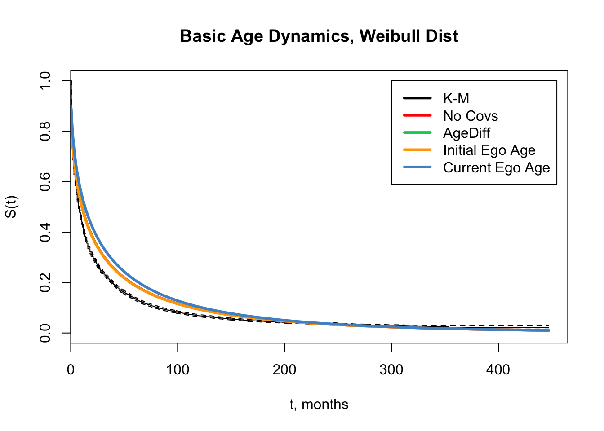
5.3 Thoughts & Discussions
- age is not responsible for the initial steep drop-off
- exp mixture models & weibulls fit better because there is failty endogenous to the relationships
- weibull isn’t masking the effect of age
- has anybody demonstrated a crosswalk between a exponential mixture and a weibull?
- theory: why doesn’t age have a larger effect?
- age / period / cohort effects - what would we expect?
- review length bias in survival analysis / study design issues